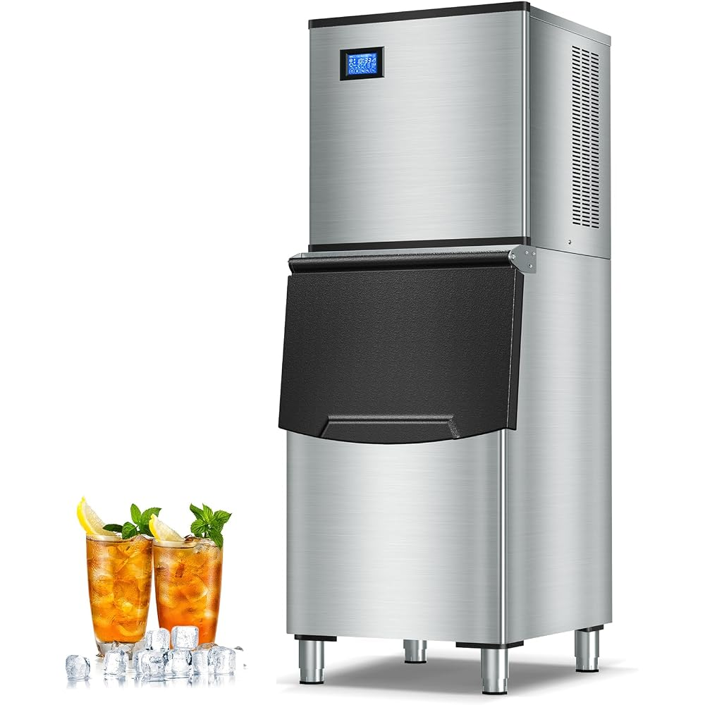

상담·기종 확인
모델명을 알려 주시거나 사진 한 장을 보내 주시면 기종을 확인합니다.
브랜드 안내 · 중랑
아이스트로는 안정적인 성능으로 매장에서 널리 쓰이는 국산 브랜드입니다. 널리 쓰이는 만큼 오래 관리 없이 사용된 기종도 자주 만납니다.

중랑 지역의 음식점과 주점·사무실과 학원에서도 제빙기 내부 오염은 같은 방식으로 쌓입니다. 겉에서 확인하기 어려운 내부 상태를 분해해서 확인하고 세척하는 것이 아이스랩 청소의 기본입니다.
브랜드마다 분해 구조와 부품 배치가 달라, 같은 제빙기라도 청소 포인트가 조금씩 다릅니다. 아이스랩은 전 브랜드를 취급하며, 상담 때 모델명을 확인하거나 사진을 받아 기종 구조를 파악한 뒤 작업합니다.
브랜드와 무관하게 공통으로 확인하는 곳은 같습니다. 냉판의 석회와 물때, 워터펌프와 급수 호스·노즐·파이프의 오염, 얼음 저장고의 곰팡이입니다. 부품을 분해해 친환경 세제로 씻고 스팀 고압세척으로 헹군 뒤 살균합니다.
모델명을 모르면 제빙기 전체 사진을 보내 주세요. 사진을 보고 기종을 확인해 드립니다. 조립 후에는 얼음이 실제로 만들어지는지, 투명도와 모양이 고른지 확인하고 마칩니다.
모델명을 알려 주시거나 사진 한 장을 보내 주시면 기종을 확인합니다.
매장에 편한 시간으로 일정을 잡고 방문합니다.
전원을 차단하고 물이 닿는 부품을 분해합니다.
친환경 세제로 분해 세척하고 냉판의 석회를 제거합니다.
깊은 내부를 헹궈 낸 뒤 고온 스팀으로 살균합니다.
새 얼음의 투명도와 모양을 확인하고 정리합니다.
전화로 모델명을 알려 주시거나, 모델명 스티커 사진이나 제빙기 사진 한 장만 보내 주셔도 상담이 시작됩니다. 얼음 상태 같은 증상이 있으면 함께 알려 주세요.
전화 상담 · 대표번호 준비중메인으로 돌아가기